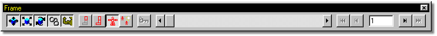

The Frame bar contains many key mode buttons which are used during any keying operation. For example, in selecting Copy from the Edit menu of a Choreography window, these key mode states depict what elements of the selected object are copied. If you then select a different object and choose Paste from the Edit menu, the states of the key mode buttons depict which of the elements stored in the Paste Buffer would actually be applied to the selected object.
Any operation that retrieves keyframe data from an object or applies keyframe data to an object uses these key mode states. These operations are Cut, Copy, Paste, Create Pose, Drop Pose onto an Action, Make Key Frame, Delete Key Frame, Next Key Frame, Previous Key Frame, and Move Frames.
A description of the buttons from left to right on the toolbar follows:
Key Skeletal Translations:
This button allows bone translation values to be retrieved or added depending on the operation being performed.
Key Skeletal Scaling:
This button allows bone scaling values to be retrieved or added depending on the operation being performed.
Key Skeletal Rotation:
This button allows bone rotational values to be retrieved or added depending on the operation being performed.
Key Constraints:
This button allows bone constraints to be retrieved or added depending on the operation being performed. For example, if you had a camera which had an Aim-At Constraint and you selected Copy from the Edit menu, then selected a light and chose Paste from the Edit menu, the light would receive an Aim-At Constraint if it did not already have one, plus all channel items (example: Enforcement value) from the original constraint would be inserted for the particular frame.
Key Muscle:
If the Key Muscle button is down during a keying operation, muscle motion is retrieved or applied during a keying operation.
Key Bone:
The Key Bone button only allows keying operation on the Selected Bone. For example, if the Elbow bone is the selected bone and you choose Copy from the Edit menu, only the data for the Elbow bone will be copied. If you then advanced frames, and chose Paste from the Edit menu with the Elbow still selected, the Elbow would be the only bone to have data applied to it whether or not this button is selectected, because the paste buffer only containts that information.
Key Branch:
Key Branch allows keying operations for the selected bone and all of its descendants.
Key Model:
Key Model performs the key operation on the entire model. For example, if you select Copy from the Edit menu of an Action window, every bone in the model will be included in the Copy operation.
Key Other:
When the Key Other button is down, any other channel items contained in that object will also be keyed. For example, if you had a light selected in a Choreography and chose Copy from the Edit menu, then select a different light and chose Paste from the Edit menu, the Red, Green, Blue, Intensity, Width, Fall Off, Cone Angle, and Softness would be applied on the new light.
However, if you chose to paste the light information on a camera instead of a Light, only common channel item data would be applied, which in this case would be none of them. Paste applies data based on the name of the channel item, so if the object being pasted to has matching channel item names, the Paste buffer will be applied to that channel item.
When a paste buffer is created, it stores the Channel items values depicted by the Key Mode State buttons for the current frame. Bone names are also stored.
If multiple bone data is in the Paste buffer, the paste will apply the paste buffer by matching the bone names in the paste buffer to the bone names in the selected object. For example, if you had the Elbow bone selected in an object with Key Branch turned on and you chose Copy from the Edit menu, the paste buffer would contain data for the Elbow, Wrist, and Fingers. If you pasted this data onto an object which only had a Wrist bone, only that bones information will be applied.
Remember that if you were pasting this same data onto an object that had Elbow, Wrist, and Finger bones, and you wanted it applied to all three bones, the Key Mode buttons must allow these three bones to receive the data (either Key Model, or Key branch).
If information for only one bone is in the Paste buffer, and you paste the data onto a single bone (Key Bone is on, or Key Branch with a selected bone that has no children is on), name matching for the bone will not be used. For example, if you select the Elbow and have Key Bone turned on and choose Copy from the Edit menu, then select the Wrist and choose Paste from the Edit menu, the paste buffer will be applied to the Wrist even though the names are different. This is a very powerful feature if you remember that Pasting uses bone name matching to apply data, except when a one to one bone Copy, then Paste function is being performed.
Frame Scrub:
The frame scrubber allows you to quickly change between frames while viewing your animation. Turning on Interrupt drawing from the Options panel Global Tab will allow the frames to interrupt before they draw completely, giving this feature a more tactile feel.
Previous \ Next Key Fame:
This allows you to change frames to the next or previous key frame depicted by the states of the Key Mode Buttons.
Previous \ Next Frame:
This will increment or decrement the current frame number.
Frame Edit Box:
This box contains the current frame number. You can also type in a new frame number here.
Other Advanced Navigating Topics:
Libraries
Status Bar View Controls
Create Icon
World Space
Snap Manipulator to Grid
Embedding Options